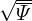
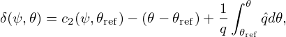
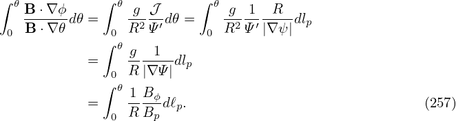

In Sec. 8.1, we introduced the local safety factor  (ψ,𝜃). Equation (156) indicates that if the Jacobian is chosen to be of the particular form 𝒥 = h(ψ)R2, then the local safety factor is independent of 𝜃, i.e., magnetic line is straight in (𝜃,ϕ) plane. On the other hand, if we want to make field line straight in (𝜃,ϕ) plane, the Jacobian must be chosen to be of the specific form 𝒥 = h(ψ)R2. We note that, as mentioned in Sec. 8.3, the poloidal angle is fully determined by the choice of the Jacobian. The specific choice of 𝒥 = α(ψ)R2 is usually too restrictive for achieve a desired poloidal resolution (for example, the equal-arc poloidal angle can not be achieved by this choice of Jacobian). Is there any way that we can make the field line straight in a coordinate system at the same time ensure that the Jacobian can be freely adjusted to obtain desired poloidal angle? The answer is yes. The obvious way to achieve this is to define a new toroidal angle ζ that generalizes the usual toroidal angle ϕ. Define a new toroidal angle ζ by[10]
|
| (250) |
where δ = δ(ψ,𝜃) is a unknown function to be determined by the constraint of field line being straight in (𝜃,ζ) plane. Using Eq. (157), the new local safety factor in (ψ,𝜃,ζ) coordinates is written as
To make the new local safety factor be independent of 𝜃, the right-hand side of Eq. (251) should be independent of 𝜃, i.e.,|
| (252) |
where c(ψ) can be an arbitrary function of ψ. A convenient choice for c(ψ) is c(ψ) = q, i.e., making the new local safety factor be equal to the original global safety factor, i.e.,  new = q. In this case, equation (252) is written as
|
| (253) |
which, on a magnetic surface labed by ψ, can be integrated over 𝜃 to give
|
| (254) |
where 𝜃ref is an starting poloidal angle arbitrarily chosen for the integration, and δ(ψ,𝜃ref) is the constant of integration. In the following, both 𝜃ref and δ(ψ,𝜃ref) will be chosen to be zero. Then the above equations is written
|
| (255) |
Substituting the above expression into the definition of ζ (Eq. 250), we obtain
|
| (256) |
which is the formula for calculating the general toroidal angle. If 𝜃 is a straight-field line poloidal angle, then ζ in Eq. (256) reduces to the usual toroidal angle ϕ.
In summary, magnetic field line is straight in (𝜃,ζ) plane with slope being q if ζ is defined by Eq. (256). In this method, we make the field line straight by defining a new toroidal angle, instead of requiring the Jacobian to take particular forms. Thus, the freedom of choosing the form of the Jacobian is still available to be used later to choose a good poloidal angle coordinate. Note that the Jacobian of the new coordinates (ψ,𝜃,ζ) is equal to that of (ψ,𝜃,ϕ). [Proof:
[In numerical implementation, the term ∫ 0𝜃d𝜃 appearing in δ is computed by using
For later use, from Eq. (255), we obtain
This formula is used in GTAW code, where the derivative ∂(g∕Ψ′)∕∂ψ is calculated numerically by using the central difference scheme.]